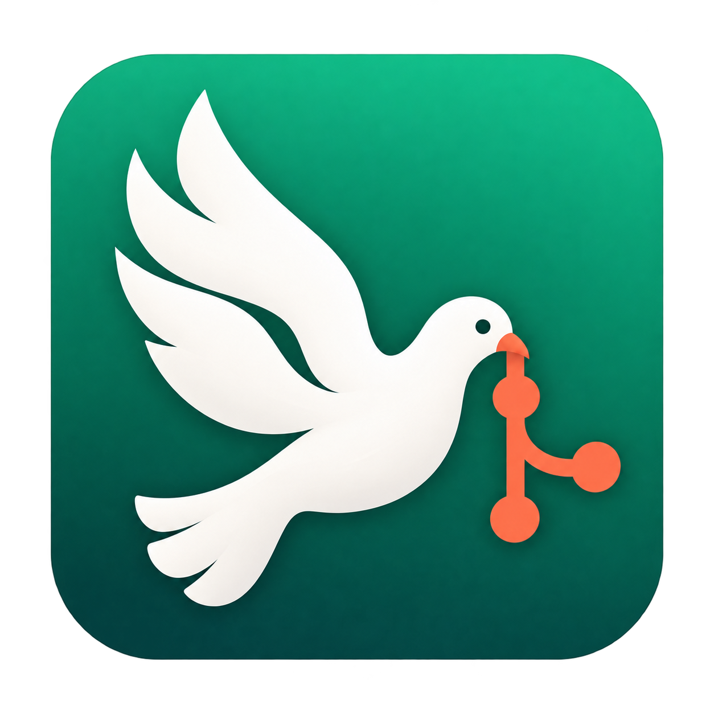
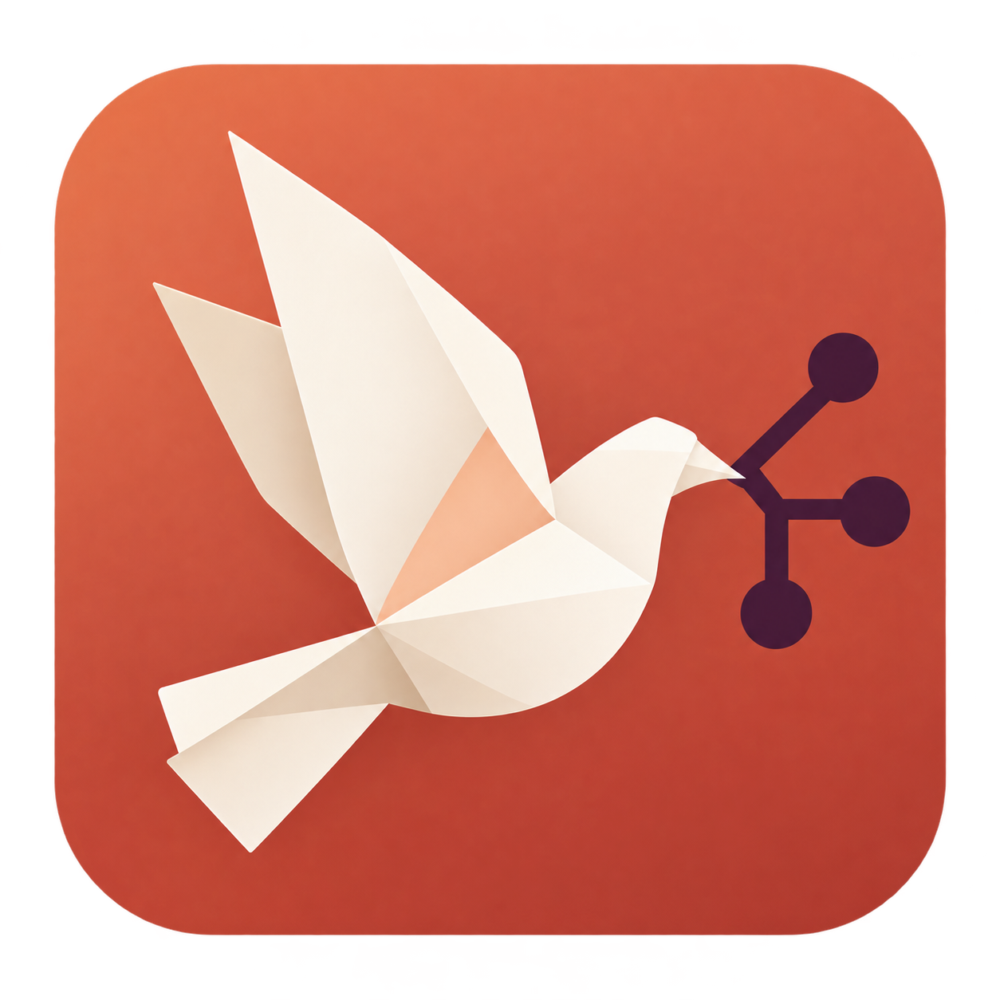

01 / AeroBold & fluid

Aero
Download PNG ↗
Sweeping wings, a strong silhouette, and a coral branch. An evolution of GitDove’s emerald identity with a clearer Git signal.
One idea, three distinct directions: a dove carrying a Git branch.

Sweeping wings, a strong silhouette, and a coral branch. An evolution of GitDove’s emerald identity with a clearer Git signal.
Soft ceramic forms, cobalt depth, and an orange enamel branch. A characterful desktop icon with the presence of a crafted object.

Broad paper folds and an angular branch bring precision to the dove. Terracotta and ivory give the identity a warm, distinctive direction.
My pick: Aero. Its sweeping silhouette and emerald palette make it a natural next step for GitDove. Porcelain favors a sculpted desktop presence; Fold offers the most distinctive change of style.